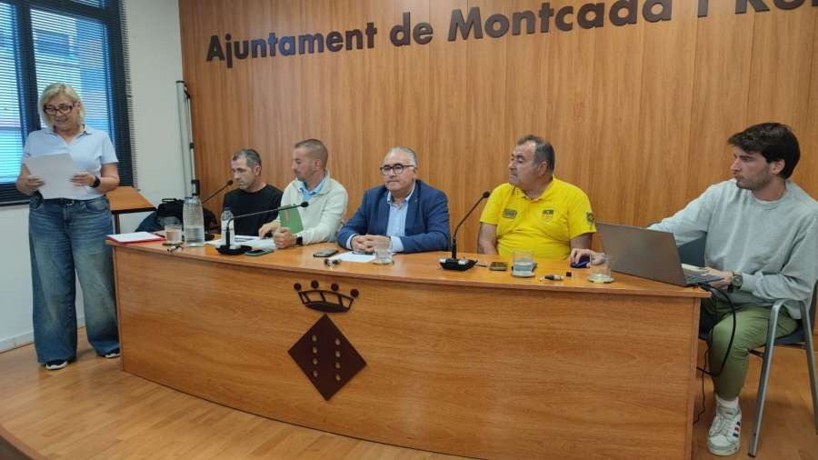

Ayuntamiento De Montcada
Noticias Relevantes
L'Ajuntament aposta per la naturalització i millora ambiental de la llera del riu Ripoll en col·laboració amb l'ADF

El Besòs
L’entorn natural de Montcada i Reixac: el Besòs

Eventos
Presència local a la 8a Trobada de Participació Infantil i Adolescent de la UNICEF
Articulos Educativos
Conveni per potenciar tallers d’estudi per a infants i adolescents en situació de vulnerabilitat